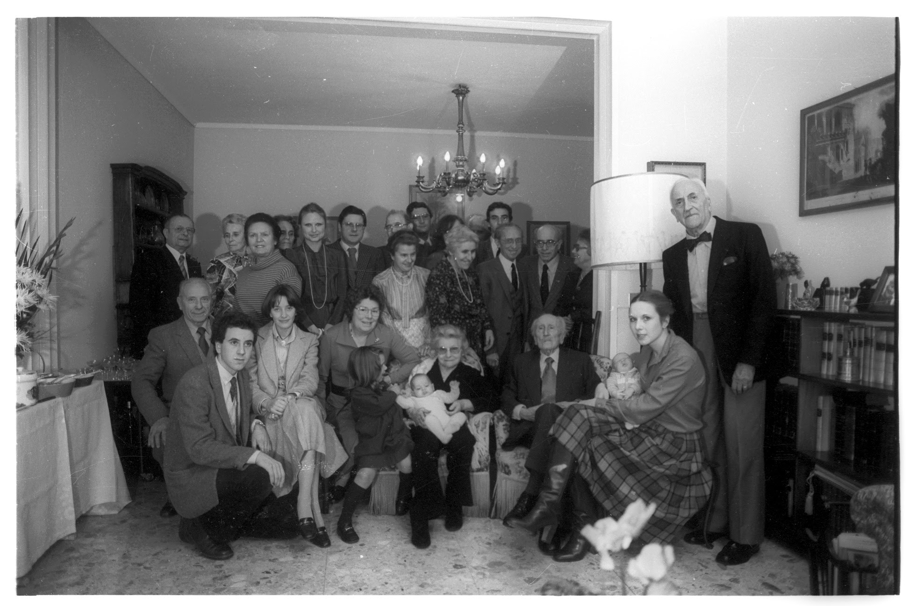

Fonti
L’indice delle fonti raccoglie le persone e i riferimenti dichiarati nelle ricette.
Filtri
Categoria
Regime
Stagione
Aimée Gibert

Antonio S.
ChatGTP
Eddy Salzano
Franco C.
Guillaume E.
Jacqueline Gibert
- Agnolotti al sugo d'arrostoItalia - Piemonte · Primi · Jacqueline Gibert
- Aringhe in terrinaFrancia - Alsazia · Antipasti · Jacqueline Gibert
- Bagna caudaItalia - Piemonte · Secondi · Jacqueline Gibert
- CrêpesFrancia · Dolci · Jacqueline Gibert
- DaubeFrancia - Provenza · Secondi · Jacqueline Gibert
- Gigot rotiFrancia · Secondi · Jacqueline Gibert
- Minestra di cavoliFrancia · Primi · Jacqueline Gibert
- Minestra di porriPrimi · Jacqueline Gibert
- Paté di fegatoFrancia · Antipasti · Jacqueline Gibert
- Salsa verdeItalia - Piemonte · Salse · Jacqueline Gibert
Mix Risto bottega sarda
Nicola D.
Nicola F.
- Braciole di carne di cavalloItalia - Puglia · Primi · Nicola F.
- Calamari ripieniItalia - Puglia · Secondi · Nicola F.
- Orecchiette baresi alle cime di rapaPuglia · Primi · Nicola F.
- Peperoni, alici e capperiPuglia · Antipasti · Nicola F.
- Riso cozze e patateItalia - Puglia · Primi · Nicola F.
- Sfogliata puglieseItalia - Puglia · Primi · Nicola F.